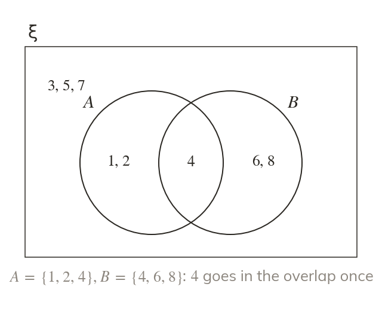
Each element once
Every element appears exactly once. It goes in the region of all the sets it belongs to.
A Venn diagram turns a list of sets into a picture, so overlaps and gaps can be seen at a glance. It is the tool for every set and probability question that follows.
Work down the page at your own pace. Write every answer in your book first, then click to check it.
Read each card, then follow the worked examples one step at a time.

Every element appears exactly once. It goes in the region of all the sets it belongs to.
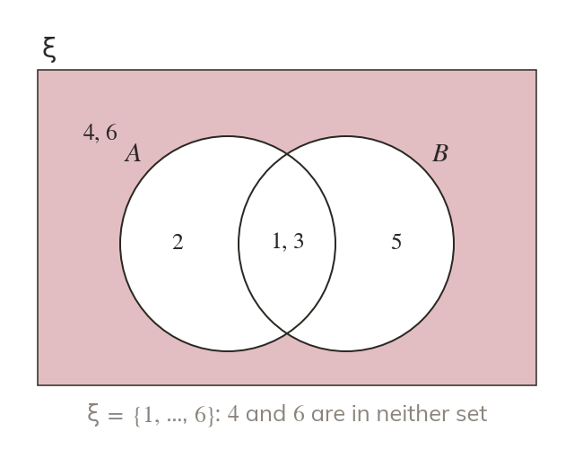
An element in neither set still belongs to ξ. It goes inside the rectangle, outside the circles.
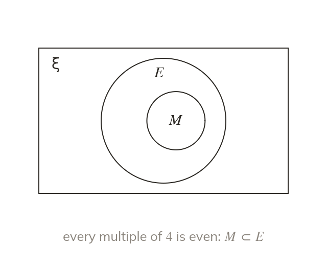
An Euler diagram draws only regions that hold elements. A subset is drawn inside its set.
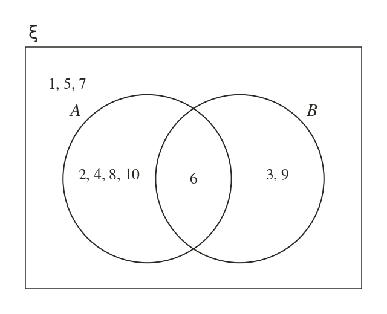
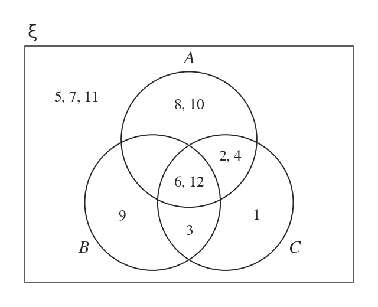
Pick an answer. If it's wrong, the feedback tells you which mistake it was.
Printable worksheet — the questions with room to work.
Read each card, then follow the worked examples one step at a time.
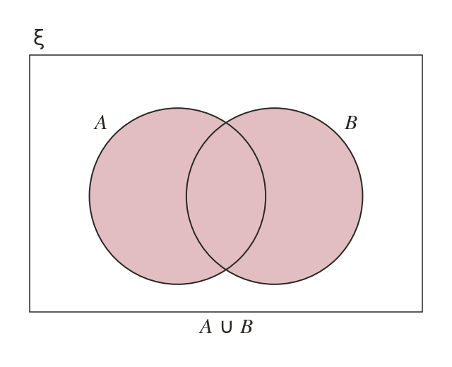
∪ is everything inside either circle, overlap included. The word 'or' includes both.
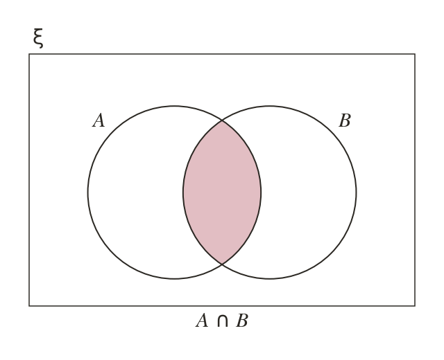
∩ is the overlap alone. Its elements are in both sets at once.
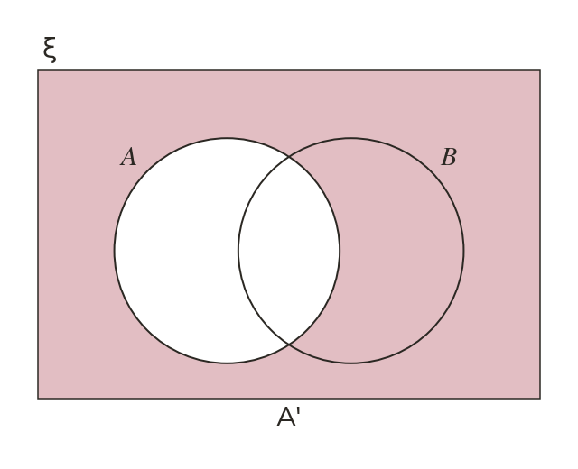
A' is everything inside ξ but outside A. It includes the part of outside A.
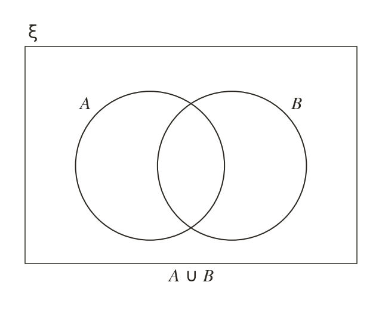
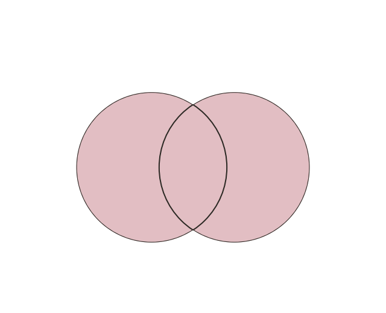
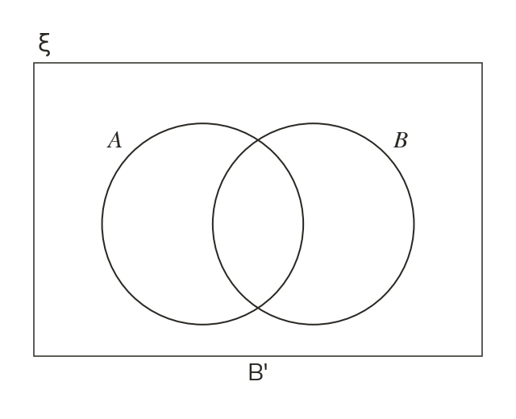
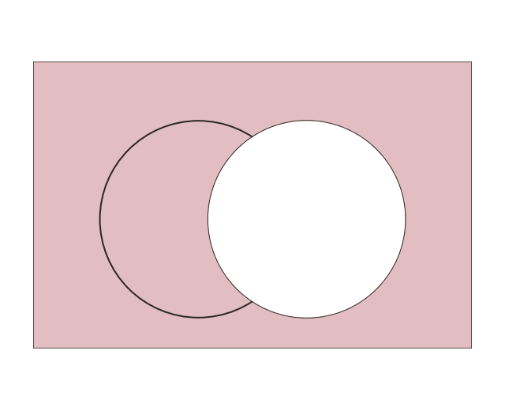
Pick an answer. If it's wrong, the feedback tells you which mistake it was.
Printable worksheet — the questions with room to work.
Finished? Next lesson: 10H.3.3 Compound Shading and Venn Probability.
Log in, then search for a code to practise that skill.
Videos, worksheets and more on each part of this lesson.